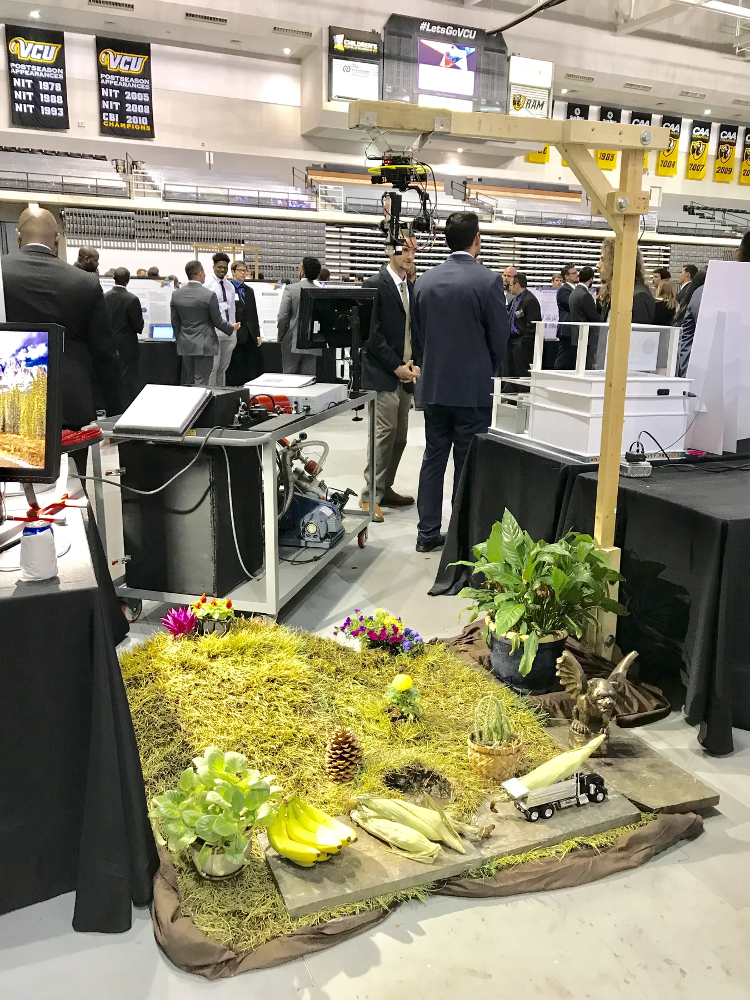

01 · Senior capstone

R.A.M.S
- Sternheimer Design Award
- NASA Langley sponsor
A spectral mapping sensor payload for mounting on unmanned aerial vehicles that adapts to any aircraft able to carry its low weight. R.A.M.S scans its surroundings and computes a three-dimensional map of nearby material (spectral) signatures.
- Raspberry Pi 3B
- LIDAR-Lite v3
- Spectrometer
- Custom PCB
- 3D printing